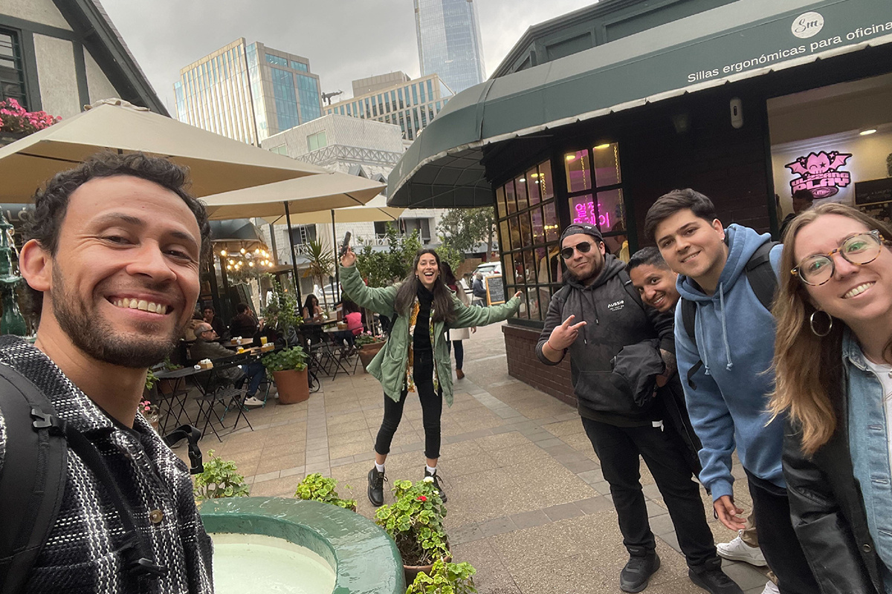
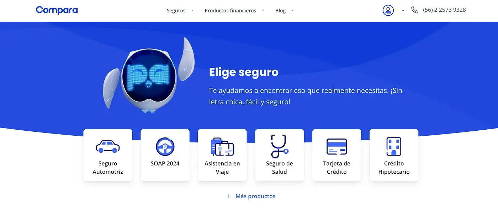
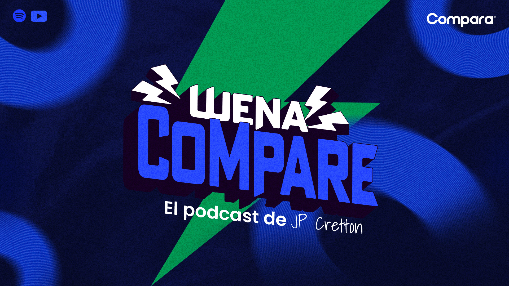

Salir a la calle y de paso ganar un Effie
Así casualmente...
Así casualmente...

A veces, en el mundo del marketing, llegas a un punto donde, por mucho que todo esté funcionando bien, sientes que algo falta. Eso nos pasó en Compara. Llevábamos años dominando los canales digitales, logrando grandes resultados con SEM, SEO y un enfoque súper afinado en producto. Pero un día, lo vimos claro: si queríamos llegar más lejos, teníamos que salir de nuestra zona de confort y hacer algo diferente, algo que realmente nos conectara con las personas.
Fue así que dijimos “es el momento de invertir en nuestra marca”. Lograr que la gente conociera no solo lo que hacíamos, sino también el por qué estábamos aquí. Queríamos que entendieran nuestra cultura y cómo buscábamos construir un futuro más transparente en el mundo de los seguros.
El relanzamiento de la marca fue todo menos superficial. No solo cambiamos el logo, los colores y el tono de voz. Se trataba de algo más profundo: definir quiénes éramos como startup y cómo queríamos presentarnos al mundo. Que nuestra marca hablara de nuestra cultura, de las miles de comparaciones que hacemos todos los días, desde las más banales hasta las más trascendentales. Y eso es lo que hicimos: construimos nuestra narrativa alrededor de eso: con humor, claridad y simplicidad. Porque sí, “Amamos Comparar”.

Parte clave de esta campaña fue tomarnos la calle. Y lo digo literal. No estábamos solo en las pantallas o en anuncios digitales. Estábamos ahí, en los buses que cruzaban la ciudad, en los paraderos, en las pantallas del metro.
Queríamos que nuestra presencia fuera innegable. ¡Incluso intervenimos un paradero en Las Condes con un espacio interactivo! Que nuestra presencia esté donde la gente vive su día a día, recordándoles que, al final del día, las comparaciones que sí importan son las que hacemos con productos y servicios que realmente necesitamos.
Para potenciar nuestra conexión con las personas, decidimos alejarnos de los típicos rostros famosos y apostar por tres perfiles orgánicos que resonaran en TikTok e Instagram. Ellos se convirtieron en la cara de nuestra campaña, con contenido auténtico, cercano y con un toque de humor (Rodi Garrido, El Gringo y Vale Saini).
Además, lanzamos nuestro propio podcast, "WENA COMPARE", conducido por Jean Philippe Cretton, que no solo hablaba de seguros o finanzas, sino que comparaba cultura pop, música, cine. La idea era clara: queríamos ser parte de las conversaciones cotidianas, no solo un anuncio más en la calle.

Todo esto lo empezamos a gestar en enero y fue una locura. Invertimos más de $150M CLP en medios, y el 85% de esa inversión fue en offline. Hicimos presencia en todos lados: buses, paraderos, pantallas de metro, ¡la ciudad estaba cubierta de azul!
Los resultados empezaron a hablar por sí solos: crecimientos en branded sales, peaks históricos de ventas en SOAP y Cyber, a su vez, un aumento impresionante en interacciones orgánicas.
Pero lo más importante es que logramos algo que nunca imaginamos en ese primer año: GANAMOS un Effie en la categoría Relanzamiento. ¡Sí, el único en nuestra categoría! Los Effies, por si no los conoces, son como los “Óscar” del mundo del marketing. Premian las campañas que realmente funcionan, las que logran resultados tangibles. Así que recibir este reconocimiento no solo celebra el éxito de la campaña, sino todo el esfuerzo, trabajo en equipo y la apuesta por algo completamente nuevo para nosotros.
Este primer año fue solo el comienzo. ¿Lo mejor? Todo lo que viene después.
 Actualidad
ActualidadEl recordado programa noventero “Venga Conmigo” marcó a toda una generación en Chile. Su exitoso segmento “Corazones Service” se transformó…
 Actualidad
ActualidadHace aproximadamente 2 meses comenzamos con el cierre de lo que empezó en julio como el “Compariniverse”.
 Actualidad
ActualidadHace unos meses lanzamos Compariniverse: la primera campaña en Chile protagonizada por una celebridad completamente clonada con IA.